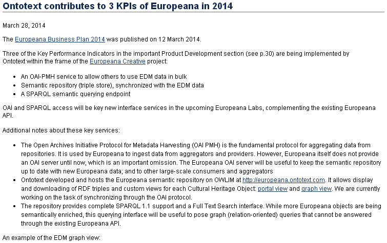

Semantic Technologies for Cultural Heritage
vladimir.alexiev@ontotext.com
SmartCulture Conference
2014-06-11, Brussels
2D interactive presentation (printable version). Press O for overview, H for help.
Proudly made in plain text with reveal.js, org-reveal, org-mode and emacs.
Table of Contents
SmartCulture Conference (thanks for inviting me!)

Ontotext Corp
- World Leading semantic technology developer
- Established in 2000 as part of Sirma Group
- Spun off in 2008 after venture investment (NEVEQ)
- 75 employees
- Offices in Bulgaria (Sofia and Varna), UK (London), USA (New York)
- Global leader in semantic databases and search
- Proven Delivery
- More high-profile show cases than competitors
- Highest profile sem web applications
- BBC: World Cup 2010, London Olympics 2012
- Semantic search for multinational pharmaceuticals (Astra Zeneca)
- Stable and Growing
- Both staff and revenue growing for 12th year in a row
Some Ontotext Clients

Ontotext Research Projects (FP5-FP7)
- Bulgaria's largest participant: over 30 projects

Semantic Technologies
- Web 1.0: hyperlinked documents (World Wide Web)
- Web 2.0: interactive applications, the Social Web
- Web 3.0: interlinked data (Global Giant Graph)
Is this something new?
- It was all envisioned by Sir Tim Berners-Lee 25 years ago
- Standardized by W3C: both HTML and sem web standards (RDF, RDFS, OWL, SPARQL…)
- Great flurry of sem tech activity in the last 15 years
- Buzzwords: Big Data, Semantic Analytics, Concept Extraction, Sentiment Analysis…
Linked Open Data Cloud
- This is from Mar 2009, now has grown 10x!
- Part at http://factforge.net, http://linkedlifedata.com

Linguistic Linked Data

First Ontotext GLAM Project: UK National Archives
Cultural Heritage LOD Cloud

Europeana Recognizes Importance of Semantic Technologies

Europeana Sem Tech MindMap
Europeana Sem Tech MindMap Detail

ResearchSpace
- A Virtual Research Environment for art research
- Funded by the Andrew Mellon Foundation
- Executed by the British Museum
- Software developed by Ontotext
- Uses Ontotext's semantic database (OWLIM)
- Provided all 2.5M objects of the British Museum as Linked Open Data (LOD)
2.5M British Museum Objects as LOD

ResearchSpace Semantic Search

- Also works across collections, eg BM and Yale Center for British Art
ResearchSpace: Semantic Data Annotation

ResearchSpace: Semantic Image Annotation

Bulgariana
- A Bulgarian aggregator to Europeana

Bulgariana Collection: Thracian Gold
Rhyton at Europeana
- Now any European citizen can find it!

Rhyton at Europeana Open Culture
- Others make beautiful apps with your data!

Bulgariana Collection Featured in Open Culture
- And publicize it for you to an audience you couldn't reach!
Europeana Creative
Europeana Creative
Enabling Creatives to Work with CH Data
- Pilots by eCreative partners
- Open challenges, growing to incubation support
- Help with collection data, content reuse, Europeana APIs, creative workshop ideas…

In 5 pilot areas: tourism, social networks, design, nature, history

Creative Open Challenges and Incubation Support

Ontotext in Europeana
Ontotext works on fundamental backend technologies important for KPIs 
Europeana OAI and SPARQL
Ontotext creates OAI PMH server for Europeana
- So we or others can download objects in bulk
Ontotext hosts the Europeana semantic data (EDM) in OWLIM
- http://europeana.ontotext.com/sparql
20M objects, 1.5 years old - http://europeana-test.ontotext.com/sparql
working with Europeana to update it - Provides SPARQL querying
SPARQL 1.1 Queries
Eg Polish Periodicals by library and decade
http://europeana-test.ontotext.com/sparql
select
?date
(sum(?n1) as ?Uniwersytetu_Warszawskiego)
(sum(?n2) as ?Politechniki_Lubelskiej)
(sum(?n3) as ?Baltycka)
{
?x dc:type 'periodical'@en.
?x ore:proxyIn/edm:dataProvider ?dataProvider.
?x dc:date ?date2.
bind (xsd:integer(concat(substr(?date2,1,3),'0')) as ?date)
bind (if(?dataProvider='e-biblioteka Uniwersytetu Warszawskiego',1,0) as ?n1)
bind (if(?dataProvider='Biblioteka Cyfrowa Politechniki Lubelskiej',1,0) as ?n2)
bind (if(?dataProvider='Bałtycka Biblioteka Cyfrowa',1,0) as ?n3)
} group by ?date order by ?date
SPARQL Analytics
Eg Polish Periodicals by library & decade (you can jsfiddle with it)

EDM Object Graph
Getty Vocabularies
Well-known and important cultural heritage thesauri:
- Art and Architecture Thesaurus (AAT)
- Thesaurus of Geographic Names (TGN)
- Unified List of Artist Names (ULAN)
- Cultural Object Names Authority (CONA)
Ontotext is publishing them as Linked Open Data: http://vocab.getty.edu
- AAT LOD published in Feb 2014, already sees numerous use cases
- First industrial use of the latest ISO standard on thesauri: ISO 25946
- Contributed to ISO 25946 ontology
- Special session at CIDOC Congress (Dresden, Sep 2014)
Use of ISO 25946 in Getty LOD